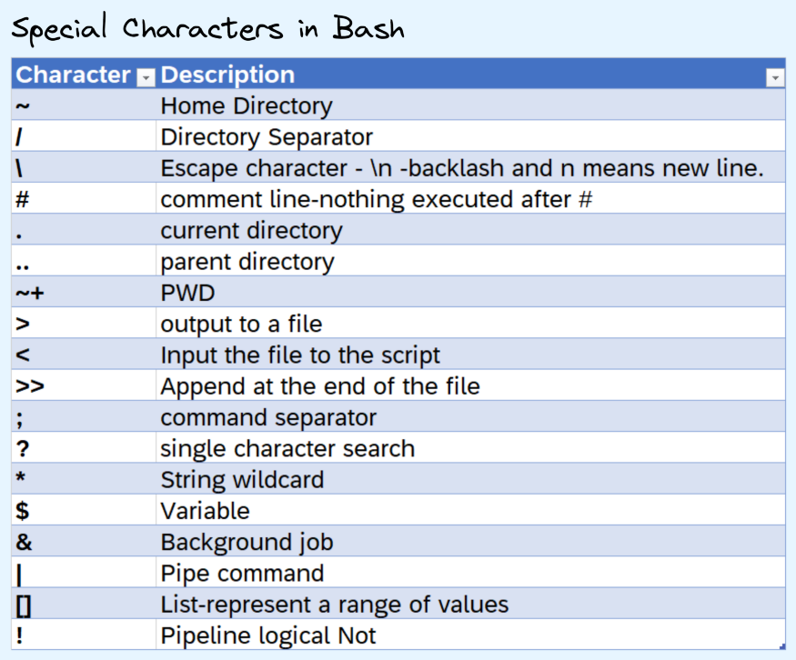

Linux
Misc
Notes from
- Bash for Data Scientists, Data Engineers & MLOps Engineers
- Bunch of other stuff that I didn’t take notes on
- Bash Scripting on Linux: The Complete Guide - video course
- Bash for Data Scientists, Data Engineers & MLOps Engineers
Resources
- Doc - All on one page so you can just ctrl + f
- Bash Scripting Cheatsheet
- Curl Docs
- Data Science at the Command Line: Obtain, Scrub, Explore, and Model Data with Unix Power Tools
man <command>displays documentation for commandSpecial Characters
- “>†redirects the output from a program to a file.
- “>>†does the same thing, but it’s appending to an existing file instead of overwriting it, if it already exists.
- “>†redirects the output from a program to a file.
Make a project directory and go to that directory
mkdir code/project cd $_Get the dependency tree for a binary
ldd path/to/binary.bashrcis a shell script that Bash runs whenever it is started interactively. It initializes an interactive shell session. You can put any command in that file that you could type at the command prompt.- You put commands here to set up the shell for use in your particular environment, or to customize things to your preferences.
- A common thing to put in
.bashrcare aliases that you want to always be available.
The
/optdirectory is a standard directory used for installing optional or add-on software packages. It’s short for “optional†and is part of the Filesystem Hierarchy Standard (FHS).Create symlinks
- Also see
- Scripting for bash script for creating symlinks example
- CLI, Windows >> Powershell >> Misc for other details on symlinks
- Example: Personal R Environment for User1
Create symlinks for R version and package directory
su - user1 ln -s /opt/R/4.0.5/ ~/R-current mkdir -p ~/R-lib ln -s ~/R-lib ~/R-library ls -l ~/R-currentA symlink called
R-currentin User1’s home directory, pointing to the R 4.0.5 installation.-s stands for “symbolic†link
Add symlinks to
.RenvironOpen
.Renvironnano ~/.RenvironAdd symlinks to environment variables
R_HOME=~/R-current R_LIBS_USER=~/R-library
- Also see
Debian vs. Ubuntu
Stability vs. Freshness:
- Debian: Debian is known for its stability and reliability. It has a rigorous testing process and a conservative approach to updates, which makes it suitable for servers and systems where stability is crucial.
- New versions released approximately every 2-3 years
- Receives regular security and maintenance updates but not feature updates.
- Ubuntu: Ubuntu is based on Debian but tends to be more up-to-date with software packages.
- New versions released every six months (April and October). Every two years, an LTS (Long-Term Support) version is released, which is supported for five years.
- Regular (non-LTS) releases receive updates for nine months, while LTS releases receive security and maintenance updates for five years
- Debian: Debian is known for its stability and reliability. It has a rigorous testing process and a conservative approach to updates, which makes it suitable for servers and systems where stability is crucial.
Package Management:
- Debian: Debian uses the Debian Package Management System (dpkg) and Advanced Package Tool (APT) for package management. It has a vast repository of software packages.
- Categorized into main, contrib, and non-free, with strict adherence to free software principles in the main repo
- Ubuntu: Ubuntu also uses dpkg and APT but adds its own software management tools like Snap and Ubuntu Software Center. This can make software installation more user-friendly.
- Categorized into main, universe, restricted, and multiverse, allowing more flexibility with proprietary and non-free software.
- Debian: Debian uses the Debian Package Management System (dpkg) and Advanced Package Tool (APT) for package management. It has a vast repository of software packages.
Community and Support:
- Debian:
- Community: It’s community-driven, so support may be slower and more focused on experienced users.
- Support: Primarily community-based through forums, mailing lists, and IRC channels
- Ubuntu:
- Community: A vibrant community and benefits from Canonical’s commercial backing, which provides professional support options.
- Support: In addition to community support, Ubuntu offers commercial support through Canonical, making it attractive for businesses.
- Debian:
Licensing:
- Debian:
- If you are committed to using entirely free and open-source software, Debian is the better choice. Debian’s strict licensing policy ensures that the software in its main repository adheres to the highest standards of software freedom.
- Users who need non-free software must enable the “contrib†or “non-free†repositories manually, making it clear when non-free software is being used.
- Ubuntu: While Ubuntu also includes mostly free and open-source software, it may include some proprietary drivers and software by default, which can be a concern for users who prioritize a completely open-source system
- Debian:
Performance
- Debian
- Server Performance: Debian is often preferred for servers due to its stability, minimal resource usage, and flexibility. It can be tuned for performance with fewer running services, making it ideal for high-performance server applications
- Lightweight Desktops: Debian can be configured to run very efficiently on desktops, especially with lightweight environments or minimal installations.
- Ubuntu
- General Desktop Use: Ubuntu is optimized for a good balance of performance and user experience. It’s a solid choice for general desktop use, especially on modern hardware.
- Cloud and Container Performance: Ubuntu is widely used in cloud and container environments (e.g., Ubuntu Server, Ubuntu Core), where its performance is optimized for these specific use cases
- Debian
Hardware
- Debian works well on older hardware. Debian still offers a 32-bit version of the distro, while Ubuntu no longer offers a 32-bit version.
{kind=link}
Commands
Basic Commands

echo $SHELL- prints the type of shell you’re usingecho $PATH- prints all stored pathesexport PATH="my_new_path:$PATH"- store a new path- Command Syntax:
command -options arguments - Piping Commands:
cat user_names.txt|sort|uniq du- Disk Usage; Useful for getting the size of directories (link)Flags
- -h - Human readable output (i.e. instead of bytes, you get kilobytes, megabytes, etc.)
- -s - Summarize; size of a particular directory in bytes
- -a - All files including directories
- -c - Calculates the total size of the printed output
- -d - Specify how levels deep into a directory you want stats for (e.g. -d 2)
- –time - Time of last modification
Example: Sort directories by size
du -sh /* | sort -hExample: Calculate size of directory
du -c -h /home/my/directory
Aliases
Custom commands that you can define in order to avoid typing lengthy commands over and over again
Examples
alias ll="ls -lah" alias gs="git status" alias gp="git push origin master"Create safeguards for yourself
alias mv="mv -i"mvwill automatically use the i flag, so the terminal will warn you if the file you’re about to move does already exist under the new directory,- This way you don’t accidentally overwrite files that you didn’t mean to overwrite.
Files/Directories
List

- List 10 most recently modified files:
ls -lt | head - List files sorted by file size:
ls -l -S - List multiple directories:
ls ./docs ./text ./data
- List 10 most recently modified files:
Look at first 3 rows:
head -n3 students.csvCreate/Delete Directories
mkdir <dir_name> rmdir <dir_name>- -v means “verbose†so it tells us if it was successful
Output to file:
echo “This is an example for redirect†> file1.txtAppend line to file:
echo “This is the second line of the file†>> file1.txtCreate/Delete file(s):
# Create files touch file1.txt touch file1.txt file2.tx # Delete files rm file1.txt rm file1.txt file2.txtMove files/dir; Rename
# Move single file mv my_file.txt /tmp # Move multiple files mv file1 file2 file3 /tmp # move only .csv files to data directory and be verbose mv -v *.csv ./data/ # Move a directory or multiple directories mv d1 d2 d3 /tmp # Rename the file using move command mv my_file1.txt my_file_newname.txt- File(s) and directories being moved to “tmp†directory
Search
Find
# syntax find <path> <expression> # Find by name find . -name “my_file.csv" #Wildcard search find . -name "*.jpg" # Find all the files in a folder find /temp # Search only files find /temp -type f # Search only directories find /temp -type d # Find file modified in last 3 hours find . -mmin -180 # Find files modified in last 2 days find . -mtime -2 # Find files not modified in last 2 days find . -mtime +2 # Find the file by size find -type f -size +10MSearch inside files
zgrep- Search the compressed file or files content just providing the search term.Default: Prints the matched file name and the complete line
Flags
- -i: Ignore case
- -n: Print only matched lines
- -v: Print only unmatched lines (i.e. not pattern)
- -o: Print only the matched part
- -l: Print only file names
- -h: Print only file lines
- -c: Count matched lines
- -e: Multiple search terms
Example: Search multiple files
zgrep ismail auth.log.*.gz- Searches for the term “ismail†all files beginning with “auth.log.†in their names.
- *Could also provide each file’s name separated by a space*
Example: Search for multiple terms
zgrep -e "ismail" -e "ahmet" auth.log.2.gz
Locate (faster)
Install
bash sudo apt install mlocate # DebianUsage
sudo updatedb # update before using locate .csv
Unzip:
unzip ./foia.zipSplit files
# default: 1000 lines per file, names of new files: xaa, xab, xac, etc. split my_file # add a prefix to new file names split my_file my_prefix # specify split threshold (e.g. 5000) by number of lines split --lines=5000 my_file # specify split threshold by size (e.g. 10MB) split --bytes=10 MB my_filePermissions
ls -lSee list of files and the permissions-rwxrwxrwx- sytax of permissions for a folder or directory- “rwx†stand for read, write, and execute rights, respectively
- The 3 “rwx†blocks are for (1) user, (2) user group, and (3) everyone else.
- In the given example, all 3 of these entities have read, write, as well as execute permissions.
- The dash indicates that this is a file. Instead of the dash, you can also see a “d†for directory or “l†for a symbolic link.
chmod- edit permissions- Example:
chmod u+x my_program.py- makes this file executable for yourself
- Example:
sudo- “super user†- using this prefix gives you all the permissions to all the filessudo su- opens a stand alone super user shell
Print file content
cat < my_file.txt # or cat my_file.txtPrint 1 pg at a time:
less my_file.txtPrint specific number of lines:
head -n<num_lines> <file.csv>Print file content from bottom to top:
tac my_file.txtcat -b log.txt | grep error: shows all lines in log.txt that contain the string ‘error’, along with the line number (-b)
Logicals and Conditionals
- Logicals
; :
command1 ; command2- command 1 and command 2 run independently of each other
& :
command1 & command2- command 1 runs in the background and command 2 runs in the background
&& :
command1 && command2- If the first command errors out then the second command is not executed
|| :
command1 || command2- The second commmand is only execute if the first command errors
Example
cd my_dir && pwd || echo “No such directory exist.Check”- If the my_dir exists, then the current working directory is printed. If the my_dir doesn’t exist, then the message “No such directory exists. check†message is printed.
- Conditionals
- Use
[[ ]]for conditions inif/whilestatements, instead of[ ]ortest.[[ ]]is a bash builtin, and is more powerful than[ ]ortest.- Example:
if [[ -n "${TRACE-}" ]]; then set -o xtrace; fi
- Use
String Matching
Example: Search for “error†and write to file
#output to a file again cat file1 file2 file3 | grep error | cat > error_file.txt #Append to the end cat file1 file2 file3 | grep error | cat >> error_file.txt- Prints lines into grep which searches for “error†in each line. Lines with “error†get written to “error_file.txt”
Filter lines
grep -i “Doctorate†adult_t.csv |grep -i “Husband”|grep -i “Black”|csvlook # -i, --ignore-case-Ignore case distinctions, so that characters that differ only in case match each other.- Select all the candidates who have doctorates and a husband and race are Black
csvlookis pretty printing from csvkit package (see Big Data >> Larger Than Memory >> csvkit)
Count how many rows fit the criteria
grep -i “Doctorate†adult_t.csv | wc -l- Counts how many rows have “Doctorate”
- -wc is “word count”
- Counts how many rows have “Doctorate”
Variables
Local Variable:
- Declared at the command prompt
- Use lower case for name
- Available only in the current shell
- Not accessible by child processes or programs
- All user-defined variables are local variables
Environment (global) variables:
- Create with
exportcommand - Use upper case for name
- Available to child processes
- Create with
Declare local and environment variables then access via “$”
# local ev_car=’Tesla’ echo 'The ev car I like is' $ev_car # environment export EV_CAR=’Tesla’ echo 'The ev car I like is' $EV_CAR- No spaces in variable assignment
Calling variables
${var}or$varvs${var?}mv file1 file2 $subdir # oops, I overwrote file2 mv file1 file2 ${subdir?} # error message instead of disaster- Using
${var?}throws an error whenvarhas not been defined
- Using
Always quote variable accesses with double-quotes.
- One place where it’s okay not to is on the left-hand-side of an
[[ ]]condition. But even there I’d recommend quoting. - When you need the unquoted behaviour, using bash arrays will likely serve you much better.
- One place where it’s okay not to is on the left-hand-side of an
Functions
- Use local variables in functions.
- Accept multiple ways that users can ask for help and respond in kind.
- Check if the first arg is -h or –help or
helpor justhor even -help, and in all these cases, print help text and exit.
- Check if the first arg is -h or –help or
- When printing error messages, please redirect to stderr.
- Use
echo 'Something unexpected happened' >&2for this
- Use
Functions
Basic
say_hello() { echo "hello" } say_helloUsing Return
failing_func () { return 1 }returncannot take strings — only numbers 1 to 255
With arguments
say_hello() { echo "Hello $1 and $2" } say_hello "Ahmed" "Layla"Declaring local and global variables
say_hello() { local x x=$(date) y=$(date) }localis a keyword- x is local and y is global
Suppress errors
local x=$(moose)- When
localis used in the same line as the variable declaration, then the variable never errors. e.g. Even if moose doesn’t exist, this line won’t trigger an error
- When
Loops
- For
Create Multiple Files
#!/bin/bash # Create a directory for the output files mkdir output # Loop through numbers 0 to 9 and create empty files for i in {0..9}; do touch "output/sample_${i:0:3}.txt" done echo "Files created in the output directory."The ${i:0:3} syntax ensures that the number i is padded with leading zeros to a width of 3 digits.
Files that get created
output/sample_000.txt output/sample_001.txt output/sample_002.txt ...
{kind=link}
Scripting
Use the .sh (or .bash) extension for your script
Use long options, where possible (like –silent instead of -s). These serve to document your commands explicitly.
If appropriate, change to the script’s directory close to the start of the script.
- And it’s usually always appropriate.
- Use
cd "$(dirname "$0")", which works in most cases.
Use
shellcheck— analysis too for shell scripts. Heed its warnings. (link)Shebang line
- Contains the absolute path of the bash interpreter
- List paths to all shells:
cat/etc/shells
- List paths to all shells:
- Use as the first line even if you don’t give executable permission to the script file.
- Starts with “#!†the states the path of the interpreter
- Example:
#!/bin/bash- Interpreter installed in directory “/bin”
- Example:
#!/usr/bin/env bash
- Contains the absolute path of the bash interpreter
Commands that should start your script
- Use
set -o errexit- So that when a command fails, bash exits instead of continuing with the rest of the script.
- Use
set -o nounset- This will make the script fail, when accessing an unset variable. Saves from horrible unintended consequences, with typos in variable names.
- When you want to access a variable that may or may not have been set, use
"${VARNAME-}"instead of"$VARNAME", and you’re good.
- Use
set -o pipefail- This will ensure that a pipeline command is treated as failed, even if one command in the pipeline fails.
- Use
set -o xtrace, with a check on$TRACEenv variable.- For copy-paste:
if [[ -n "${TRACE-}" ]]; then set -o xtrace; fi. - This helps in debugging your scripts, a lot.
- People can now enable debug mode, by running your script as
TRACE=1 ./script.shinstead of./script.sh.
- For copy-paste:
- Use
Example: Basic Execution a Bash Script
Create a directory bash_script:
mkdir bash_scriptCreate a hello_world.sh file:
touch hello_script.shOpen hello_script.sh (text editor?)
Add code, save, and close
#!/bin/bash echo ‘Hello World’Make file executable:
chmod +x hello_world.shExecute file:
./hello_world.sh
Example: Create symlinks for mulitple accounts
#!/bin/bash for user in user1 user2 user3; do sudo -u $user ln -s /opt/R/4.0.5/ /home/$user/R-current sudo -u $user mkdir -p /home/$user/R-lib sudo -u $user ln -s /home/$user/R-lib /home/$user/R-library echo -e "R_HOME=/home/$user/R-current\nR_LIBS_USER=/home/$user/R-library" | sudo tee -a /home/$user/.Renviron done- Also see Misc >> Create Symlinks
Template
#!/usr/bin/env bash set -o errexit set -o nounset set -o pipefail if [[ -n "${TRACE-}" ]]; then set -o xtrace fi if [[ "$1" =~ ^-*h(elp)?$ ]]; then echo 'Usage: ./script.sh arg-one arg-two This is an awesome bash script to make your life better. ' exit fi cd "$(dirname "$0")" main() { echo do awesome stuff } main "$@"
{kind=link}
{kind=link}
Debugging
{kind=link}
- Also see
set -o xtracein Scripting >> Commands that should start your script
Job Management
- Programs/Scripts will by default run in the foreground, and prevent you from doing anything else until the program is done.
- While program is running:
- control+c - Will send a SIGINT (signal interrupt) signal to the program, which instructs the machine to interrupt the program immediately (unless the program has a way to handle these signals internally).
- control+z - Will pause the program.
- After pausing the program can be continued either by bringing it to the foreground (
fg), or by sending it to the backgroud (bg).
- After pausing the program can be continued either by bringing it to the foreground (
- Execute script to run in the background:
python run.py & jobs- shows all running jobs and process ids (PIDS)kill- sends signals to jobs running in the backgroundkill -STOP %1sends a STOP signal, pausing program 1.kill -KILL %1sends a KILL signal, terminating program 1 permanently.
tmux
- Terminal Multiplexer
- Enables you to easily create new terminal sessions and navigate between them. This can be extremely useful, for example you can use one terminal to navigate your file system and another terminal to execute jobs.
- Installation (if necessary):
sudo apt install tmux- Typically comes with the linux installation
- Sessions
tmux- starts an unnamed sessiontmux new -s moosecreates new terminal session with name ‘moose’tmux ls- lists all running sessionstmux kill-session -t moose- kills session named “moose”exit- stops and quits the current session- Kill all sessions (various opinions on how to do this)
tmux kill-sessiontmux kill-servertmux ls | grep : | cut -d. -f1 | awk '{print substr($1, 0, length($1)-1)}' | xargs kill
- Attach/Detach
- When you log out of a remote machine (either on purpose or accidentally), all of the programs that were actively running inside your shell are automatically terminated. On the other hand, if you run your programs inside a tmux shell, you can come simply detach the tmux window, log out, close your computer, and come back to that shell later as if you’ve never been logged out.
tmux detach- detach current session- control+b
then pressd`: When you have multiple sesssions running, this will allow you to select the session to detach - From inside bash and not inside a session
tmux a: attach to latest created sessiontmux a -t moose: attach to session called ‘moose’
- Pane Creation and Navigation
- control+b then press †(i.e. shift+’): add another terminal pane below
- control+b then press % (i.e. shift+5) : add another terminal pane to the right
- control+b then press → : move to the terminal pane on the right (similar for left, up, down)
SSH
- Typically uses a key pair to log into remote machines
- Key pair consists of a public key (which both machines have access to) and a private key (which only your own machine has access to)
- “ssh-keygen†is a program for generating such a key pair.
- If you run ssh-keygen, it will by default create a public key named “id_rsa.pub†and a private key named “id_rsa”, and place both into your “~/.ssh†directory
- You’ll need to add the public key to the remote machine by piping together cat, ssh, and a streaming operator
cat .ssh/id_rsa.pub | ssh user@remote 'cat >> ~/.ssh/authorized_keys'
- Connect to the remote machine:
ssh remote -i ~/.ssh/id_rsa - Create a config file instead
Location: “~/.ssh/config”
Contents
Host dev HostName remote IdentityFile ~/.ssh/id_rsa
- Connect using config:
ssh dev - For Windows and using Putty, see
- AWS >> EC2 >> Connect to/ Terminate Instance
- Projects Notebook >> Article, Nested Cross Validation >> Notes >> Running EC2 instances checklist
Packages
- Common package managers: apt, Pacman, yum, and portage
- APT (Advanced Package Tool)
The
aptcommand is a smaller section of theapt-getandapt-cacheoptions. Theaptcommand gives the end user just enough tools to install, remove, search and update APT packages. Theapt-getcommand has a lot more options that are useful for writing low-level scripts and tools.Install Packages
# one pkg sudo apt-get install <package_name> # multiple sudo apt-get install <pkg_name1> <pkg_name2>- Install but no upgrade:
sudo apt-get install <pkg_name> --no-upgrade
- Install but no upgrade:
Search for an installed package:
apt-cache search <pkg_name>Update package information prior to “upgrading†the packages
sudo apt-get update- Downloads the package lists from the repositories and “updates†them to get information on the newest versions of packages and their dependencies.
Upgrade
# all installed packages sudo apt-get upgrade # To upgrade only a specific program sudo apt-get upgrade <package_name> # Upgrades and handles dependencies; delete obsolete, add new apt-get dist-upgrade # together sudo apt-get update && sudo apt-get dist-upgrade
Expressions
- Sort data, filter only unique lines, and write to file:
cat adult_t.csv | sort | uniq -c > sorted_list.csv